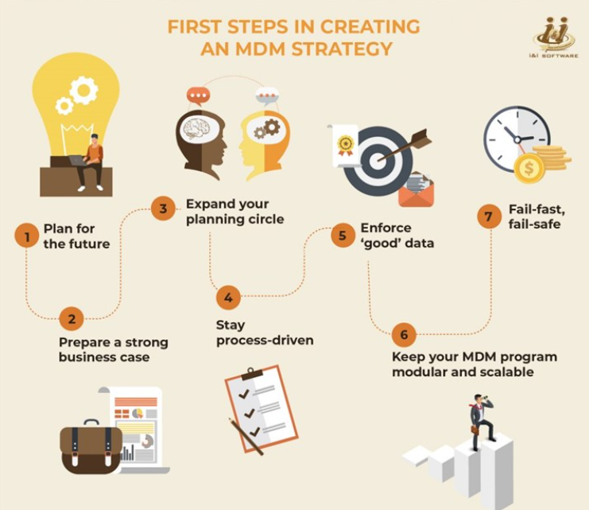

If you are looking for a roadmap that can help you drive a master data management (MDM) initiative in your organization, it's likely that you are already acquainted with why it's a good idea in the first place. And if you are already thinking of roadmaps and implementation, you're probably past the stage where you need the types of master data explained to you.
First steps in creating an MDM strategy:

Which should bring us to the question that most people ask us when they've decided to bring in MDM in their organizations: "where do we start?"
1. Plan for the future
An MDM program is like a rocket – it goes where you point it to. Just as you wouldn't go to the market with a new product or service without having a clear vision for it, you shouldn't kickstart an MDM initiative without knowing what you want out of it. We call it the FTF principle – in the next five, ten and fifteen years, where do you want your organization to be, and how can your data infrastructure help you get there? For instance, if your organization wants to grow 25X in turnover in the next five years, your MDM initiative must be tied to data that in turn ties into the business drivers that will help you achieve your goals.
2. Prepare a strong business case
Aligning your MDM initiative with your organizational vision is only half the challenge. The other half is in getting the leadership team to buy into the need for a resource-intensive project such as MDM. For that, you will need to show how your MDM initiative can actually aid business down the line. Most MDM initiatives that fail, in our experience, do so because of weak business cases. While it might seem counterintuitive to suggest that you need to create a case for MDM even when you've started by planning for the future, the truth is people tend to see these as two different things without a causative relationship between them. If you can make a strong case for MDM and get yourself a champion to sponsor your program, the organizational commitment will be significantly higher.
3. Expand your planning circle
Identify key stakeholders and departments that will contribute to, or be affected by, your MDM program and get their viewpoints in the early design phase itself. This will help you streamline requirements and stick to the holistic vision you have, instead of having to resort to some expensive and time-consuming corrections later. It might also give you new possibilities you may not have thought of, ones that might add even more value to your efforts.
4. Stay process-driven
While this is the age of the agile organization, it does not mean that processes can go out of the window. Indeed, when it comes to data governance and data management, process is – has to be – the key. Without process, there will only be chaos and confusion. With clearly defined processes, on the other hand, there will be clarity of purpose and role. Appoint stewards who'll protect the safeguards and policies that are part of your MDM initiative.
5. Enforce 'good' data
Good data is always accurate and true, even if it's not always useful. Even as you build your MDM policies from the ground up, ensure that every node through which data enters your system validates the data before passing it through. A simple mistake – such as accepting a value as a percentage instead of a decimal – can have catastrophic ramifications.
6. Keep your MDM program modular and scalable
As definitive as your long-term vision might be, we are in a VUCA world now – volatile, uncertain, complex and ambiguous. Your plans might have to change due to external conditions at any given point of time. This might be for the good, such as taking advantage at a pivotal moment, or for the bad where you might be forced to scale your ambitions back for the time being. So it might be a good idea to keep your MDM program modular, where it can fit into other parts, or be scaled up or down as the need of the hour may be. Use tools that can help you be more flexible when it comes to the architecture.
7. Fail-fast, fail-safe
Borrowed from the systems design and engineering concept and later adapted to Java and other frameworks, this best practice essentially means that you should roll out your MDM program in quick, small, manageable upgrades that are easy to roll back if there is a failure. This ensures that your MDM program does not turn into a catastrophic event at the end – either an abject failure due to structural flaws, or an even more dangerous one that corrupts your entire data system. Insulate upgrades until they are proven to be stable before opening up the gates to the rest of your network.
If you were to recall the previous posts from the three-part series, you will see that the above best practices in master data management would automatically lead to an effective data governance strategy and policy – as robust data governance policy requires a robust master data management as one of its building blocks.